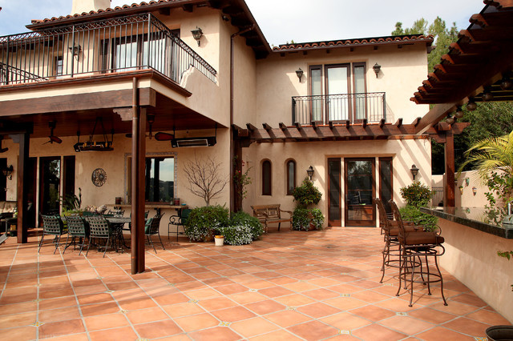

chapter13.3--handout
Background Information
西班牙建筑风格特点
我们在前面的内容里读到了不少对西班牙当地建筑的描写，比如最典型的就是刷成白色的外墙（We passed lots of Basques with oxen, or cattle, hauling carts along the road, and nice farmhouses, low roofs, and all white-plastered. — Chapter 10.1）. 今天我们就来系统了解一下西班牙的建筑风格和特点~
1. 鲜明的白墙红瓦
白墙、红瓦，层次鲜明起伏的屋面，让大多的西班牙建筑拥有非常优美的变化曲线。红陶筒瓦、STUCCO手工抹灰墙以及铁艺窗等建筑元素都有意突显出其手工艺术的特点，并且每一个细节都精雕细琢，采用的建筑材料一般也都会给人斑驳的、手工的、比较旧的感觉，整个建筑看上去充满手工的质感。
除此以外，他们在视觉上还有很强的亲和感，生态性能也极佳（比如红陶土筒瓦是通过泥土烧制而成，环保吸水，可以保持屋内温度），营造出柔和、尊贵而又充满质感的生活氛围。
2. 合理的空间规划
西班牙建筑还讲究空间的合理规划分配，且绝不会忽略建筑对人的情感与空间景观的照顾。不仅仅只是在卧室、客厅等基本功能上，更在立体的空间搭配使用上追求尽善尽美，像露台、花园、庭院、阳台等部分一点也不含糊。整个建筑常常通过空间层次的转变，丢弃了传统立面的单一和呆板。其节奏、比例、尺度更符合现代人的审美要求。
西班牙洋房一般都拥有花园和庭院（西班牙称作Patio），丰富了家庭的生活与交流空间。

3. 海湾式布局
西班牙是海洋国家，所以"水"是西班牙风格的灵魂元素之一，一些西班牙项目通常在空间分割中使用水系、绿化带为分隔媒介，使社区与外部自然区分，由社区空间到生活空间，水岸气息散落每个角落，体现了建筑与水与人的完美和谐。
Vocabulary
trough
n. 槽；饲料槽；饮水槽（a long narrow open container for animals to eat or drink from）
原文：The stone walls were whitewashed, and there was straw on the ground and wooden feed-boxes and water-troughs set against the wall.
石墙粉刷成白色，场地上铺着麦秆，靠墙根放着些木制饲料槽和饮水槽。
💧trough 从“槽，谷”这个意思还引申出了“（企业或经济的）低谷，低潮”，和peak相对，比如：There have been peaks and troughs in the long-term trend of unemployment.
长期以来失业率一直时起时伏。
hitch
vt. （用环、钩等）套住，钩住（某物）（to fix sth to sth else with a rope, a hook, etc.）
原文：A single mule was hitched to one of the cages and dragged it up against the gate in the corral wall.
有只笼子上拴着一头骡子，它把笼子拖到牛栏隔壁的大门前。
💧hitch 有“钩住，套住”的意思，所以如果说某人get hitched其实意思就是get married~ 另外hitch最常见的意思还有“搭便车”，比如：They hitched a ride in a truck.
他们搭乘了一辆路过的货车。
Crush Your Problems

They thought I was hell's own shakes of a soldier.
她们以为我是一名呱呱叫的勇士呢。
💧表达精讲
shakes 在这里是一个不常见的表达，一般在口语里用作否定：sb is no great shakes, 指“（某人）技术不太高明，不够出色”（unexceptional, ordinary）. 比如：He’s no great shakes as a singer.（作为歌手，他水平不高。）
hell's own 也是口语里的语气词，没有具体含义。


Any rate, my tailor wrote me and wanted the medals back.
不过，我的裁缝写信向我讨勋章了。
💧表达精讲
any rate 即 at any rate, 表示“反正，不管怎样”，相当于口语里的anyway. 一般用于提出比刚才所说更为重要的事，比如：Well, at any rate, the next meeting will be on Wednesday.（好了，不管怎样，下次会议将在星期三召开。）
再为大家补充一个经常在书面使用的表示“不管怎样”的短语：
in any event = in any case
比如：I might see you tomorrow, but I’ll phone in any case.
我明天或许会与你见面，不管怎样我会提前给你打电话的。
in any event 也可以替换成at all events哦~

"That's where we'll go when funds get low," Brett said.
“等我们手头紧的时候再来光顾吧。”勃莱特说。
💧表达精讲
funds 在这里指“（手头上的可用）现钱”（available money; ready cash）, funds get low 也就是“手头紧”的意思，也可以说short on funds.
Brett在这里是讽刺这家卖酒的店档次不高（We passed a wineshop with a sign in the window: Good Wine 30 Centimes A Liter）.

A man shouted from behind one of the boxes and slapped his hat against the planks, and the bull, before he reached the steer, turned, gathered himself and charged where the man had been, trying to reach him behind the planks with a half-dozen quick, searching drives with the right horn.
有个人在饲料槽后大叫一声，用他的帽子敲打板壁，公牛还没有冲到犍牛那里就转过身来，鼓起全身力气向那人刚才站着的地方冲去，用右角迅猛地朝板壁连刺了五六下，企图命中躲在后面的那人。
💧表达精讲
①gather oneself 表示“聚集，积聚（力量、精神等）；使做好准备”（to prepare yourself to do sth that requires effort）, 比如：Fortunately the short delay gave him time to gather himself. （幸运的是，这短暂的拖延给了他喘息的时间。）
②charge 指“猛冲（并攻击）”（to rush forward and attack sb/sth）, 比如：We charged at the enemy.（我们向敌人发起冲锋。）
③drives 作可数名词表示“猛击，猛踢”（a long hard hit or kick），尤指在球类运动中，比如：He hit a long, high drive to right field.（他打了个又高又远的球到右场。）

The steer who had been gored had gotten to his feet and stood against the stone wall.
被顶伤的那头犍牛爬起身来站在石墙边。
💧表达精讲
get to one's feet 表示“直/站起身来（to stand up after you have been sitting）”，get也可以换成jump/rise/leap这一类动作表示站起身来的方式（“跳起的、跃起的”等等）. 比如：He leapt to his feet and ran outside.（他跳起来，跑了出去。）
Content Analysis
Mike讲到自己把从裁缝那讨来的勋章都在晚宴上分发出去了（So I cut them all off their backing—you know, they put them on a strip—and gave them all around. Gave one to each girl）, 结果勋章是裁缝的一个顾主留在那儿的，Mike因为无力偿还而至今仍欠着裁缝人情。这中间还穿插了一个细节，也就是关于Mike破产的这件事——
💧Clue 1:Mike has gone bankrupt.
Evidence 1:Frightful blow to him when I went bankrupt. It was right after the medals. Gave his letters rather a bitter tone.
我的破产对他是个巨大的打击。这事紧接着在勋章事件之后。他的来信口气可沉痛哩。
Evidence 2:"Friends," said Mike. "I had a lot of friends. False friends. Then I had creditors, too. Probably had more creditors than anybody in England."
“朋友呗，”迈克说。“我有很多朋友。一帮酒肉朋友。后来我也就有了债主。或许比任何一个英国人的债主都多。”
Mike坦白了自己是如何破产的，首先是结识了一帮酒肉朋友，之后他自己也因为奢靡挥霍有了债主。这件事情Brett也知晓，在前面的内容里Brett介绍Mike的时候就说到了他是一个“undischarged bankrupt”（债务未偿清的破产人）。既然Mike还背负着债务，为什么Brett会跟Mike结婚呢？
这里还有一个作者并没有明确地挑明，我们可以从Jake第一次提到Mike时说的一句话里推测出来："She's in love with Mike Campbell, and she's going to marry him. He's going to be rich as hell some day."（Chapter 5）可以知道Mike留住Brett的手段是让她相信自己很快就会有钱。
但从读者的视角来看，我们知道Mike是一个不太靠谱的人，比如他经常喝得烂醉，讲话无礼粗鲁，所以实际情况是Mike并不能作出可靠的承诺。这也将导致他在Brett面前缺乏安全感，从而引发其他问题（接下来的内容里就会有冲突出现）。
今天的内容还有相当大的篇幅是描写这行人一起去斗牛场看“公牛出笼”（unloading）的。在这个过程中犍牛（steer）和公牛（bull）的动作形成了鲜明的对比——
💧Clue 2:The steers are in sharp contrast to the bulls.
Evidence 1:At the other end of the corral a gate opened and two steers came in, swaying their heads and trotting, their lean flanks swinging.
牛栏另一边的一扇门打开了，两头犍牛跑进场子，晃着脑袋，一路小跑着，瘦瘠的腹部两侧颤悠着。
Evidence 2: The steer was down now, his neck stretched out, his head twisted, he lay the way he had fallen. Suddenly the bull left off and made for the other steer which had been standing at the far end, his head swinging, watching it all.
犍牛这时已经倒下了，挺着脖子，扭着脑袋，它怎么倒下的就怎么躺着。突然，公牛撇下它，冲向另一头犍牛，这头犍牛远远地站在一边，晃着脑袋，观察着发生的一切。
犍牛因为十分温顺且没有攻击性，所以一般会用来安抚公牛的情绪，防止公牛之间发生打斗厮杀，由此犍牛也经常在这个过程为公牛所伤。对于这个稍显“血腥残忍”的场面Brett却欣赏得津津有味（"Don't look," I said to Brett. She was watching, fascinated）, 并且她对公牛也称赞有加（"My God, isn't he beautiful?" Brett said）, Jake自己也把公牛形容为一位技艺高超的拳击手（"Look how he knows how to use his horns," I said. "He's got a left and a right just like a boxer"）.
除了脾性上的不同，犍牛和公牛的根本不同点还在于前者是遭受了阉割的。我们会在后面的内容里看到作者描写这一段的真实意图，以及捕捉到其中的暗示。
Today's Bonus
💧英语里的各个律师称谓有什么不同？
"Tell them about your learned counsel," Brett said.（“告诉他们你还有过博学的辩护律师呢。”勃莱特说。）counsel 在日常生活里有“忠告，建议”的意思，在这里是指“律师，法律顾问”。
英文里对于律师的职称其实有很多，比如我们还见过lawyer, attorney等，但他们实际上并不是完全等同的哦~ 西方国家对律师的划分很细致，而且由于传统和习惯不同，各个称谓的含义也稍有不同：
1. Attorney 代理人、法律事务代理人、律师
这个词是指接受当事人委托，并有资格在法庭上代理当事人出庭参与诉讼的律师。比lawyer更正规、更书面，与委托人（client）相对应。这个词较广泛的应用于美国，还有更正式的可以称为attorney-at-law或者counselor at law.
2. Counsel (Counsellor) 提供法律意见，法律咨询的法律顾问
counsel经常和counsellor或counselor at law互用。当然，在某些国家，counsel也可以同Lawyer作为法律职业的总称互换使x用。
值得一提的是，counsel 与 advisor 指代的对象比较具体，偏重于指“法律顾问”，当然也可指出庭律师，但一般来讲，主要指为公司提供顾问或咨询性质服务的律师。比如house/in-house counsel是企业法律顾问，为企业的正式雇员。
3. Advocate 辩护律师
在英语中既是动词也是名词。作为动词表示“提倡，鼓吹，拥护，为……辩护”，作名词则是“提倡者，支持者，（辩护）律师”。
当advocate表示“（辩护）律师”的时候，主要是指学习法律、依法获准执业、为当事人提供法律意见，并有资格出庭参加案件公开审理的律师（但在英美不常用）。在法国，advocate还可以作为“律师职业”的统称。
4. Solicitor 沙律师（初级律师）
这个称呼主要用于英国和香港等地，Solicitor为初级律师，事务律师，香港常称为沙律师，主要处理非诉讼业务和一些在初级法院出庭的诉讼业务，起草法律文件，出具法律意见，提供法律咨询等。一般只能在基层法院代理当事人出庭发表意见，但是，如果事务律师满足一定的执业条件和年限，经过考核也可以申请在高级法院出庭。
5. Barrister 巴律师（出庭律师）
Barrister主要和Solicitor相区别，它表示出庭律师，香港也称为巴律师，大律师，港台影视剧中常称为“大状”，他们准许在高级法院出庭辩护或者代理。Barrister执业超过10年且表现优异，可申请成为资深大律师，以前也称为御用大律师（Queen'sCounsel）. 出庭的时候Barrister需要戴假发，而Solicitor不戴假发。
出庭律师（Barrister）通常不能直接为当事人所聘请，如果需要，通常由当事人的事务律师（Solicitor）代表当事人聘请。出庭律师更注重口才和思辨能力，而事务律师更注重文书写作能力，两者的区别只是职业分工的不同，并不代表等级的不同。从事出庭律师，还是事务律师完全看个人的兴趣爱好和执业方向。
Solicitor和Barrister的区别主要存在于英联邦国家，比如在美国就没有这样的分类（一般统称为我们一开始提到的attorney或attorney-at-law）.
6. Bar 律师全称
Bar是律师职业的全称概念。bar一词本身没有律师的意思，只有加定冠词并大写时（the Bar）才有“律师界”的意思，这是因为在中世纪的欧洲，律师和法庭上旁听的观众之间会有一个木制的栏杆（wooden bar）分隔开。
由Bar还引申出了以下几个说法，比如：be called to the bar 表示“取得律师资格，成为律师”；read for the Bar 表示“成为法律系的学生，学习法律”。
既然提到了在法庭上律师会被称作the Bar，大家可以猜一下the Bench是指谁呢？